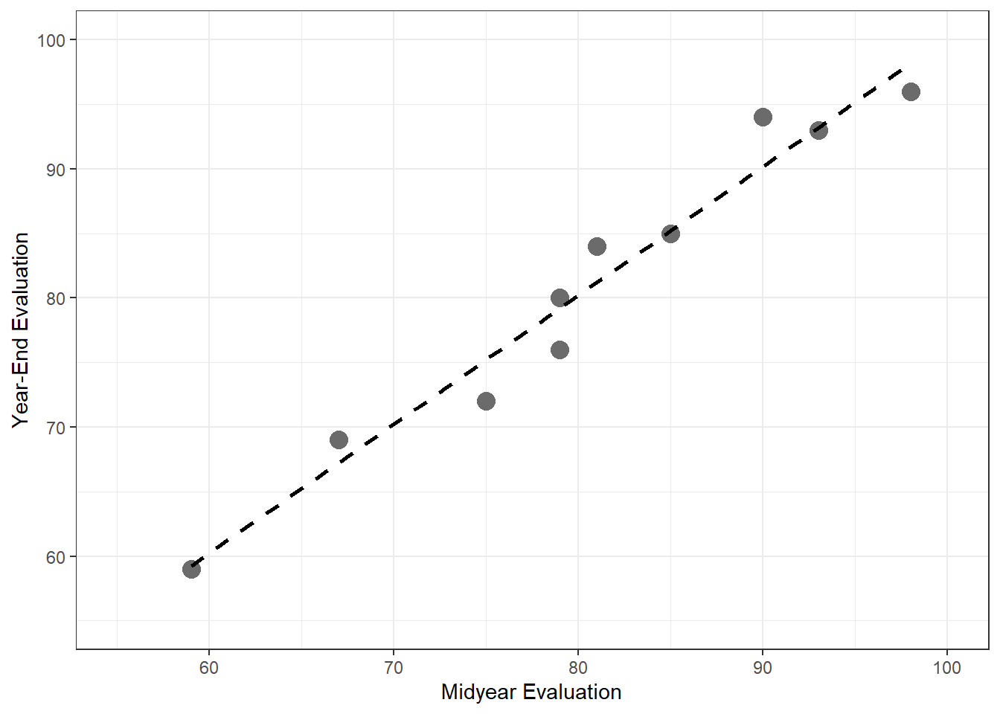
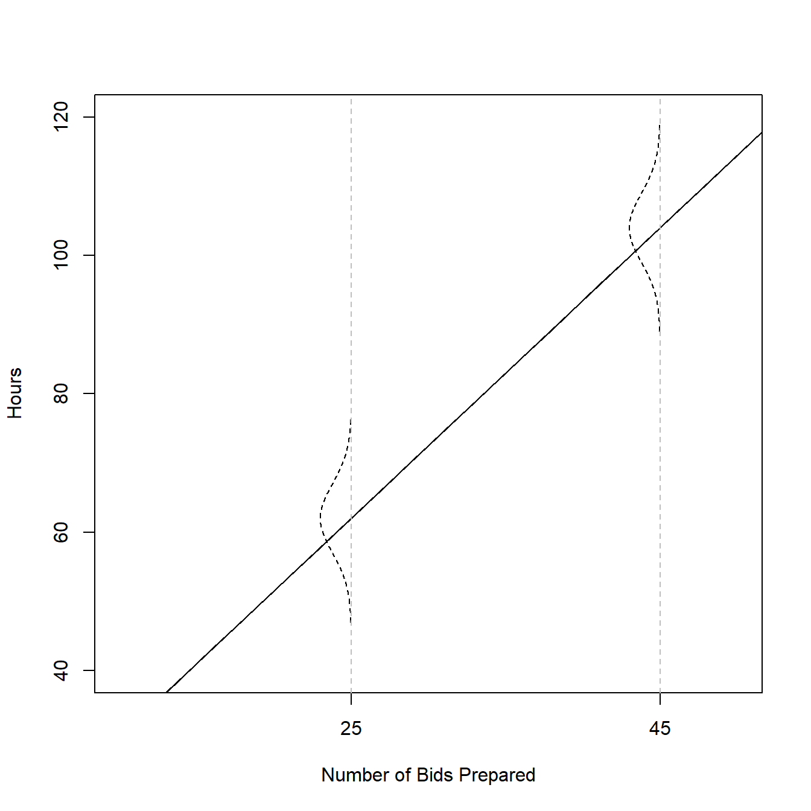
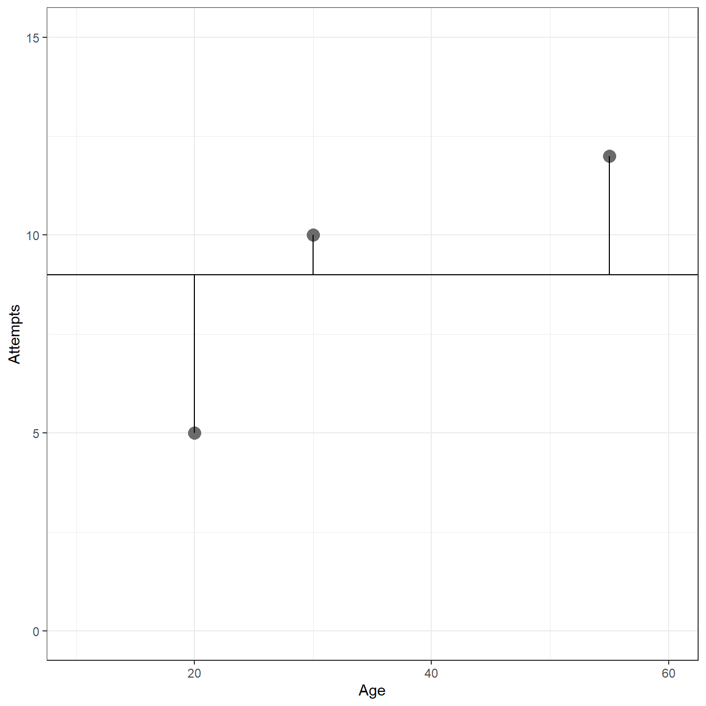
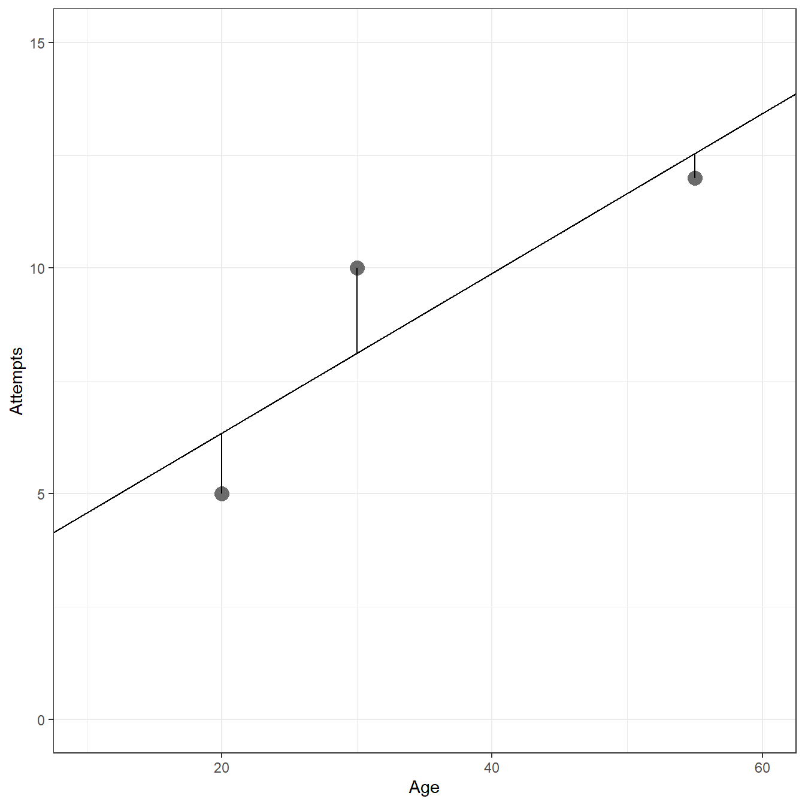
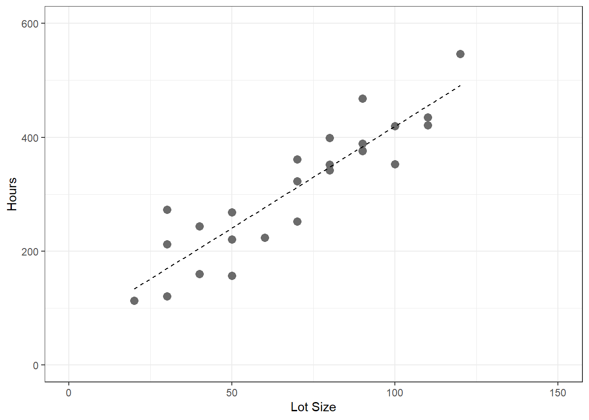
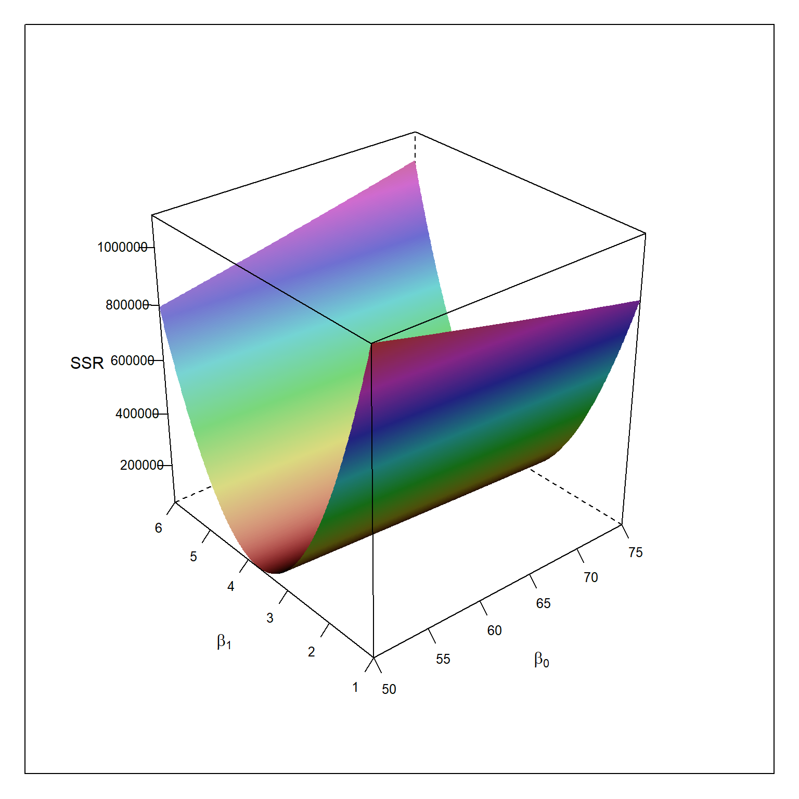
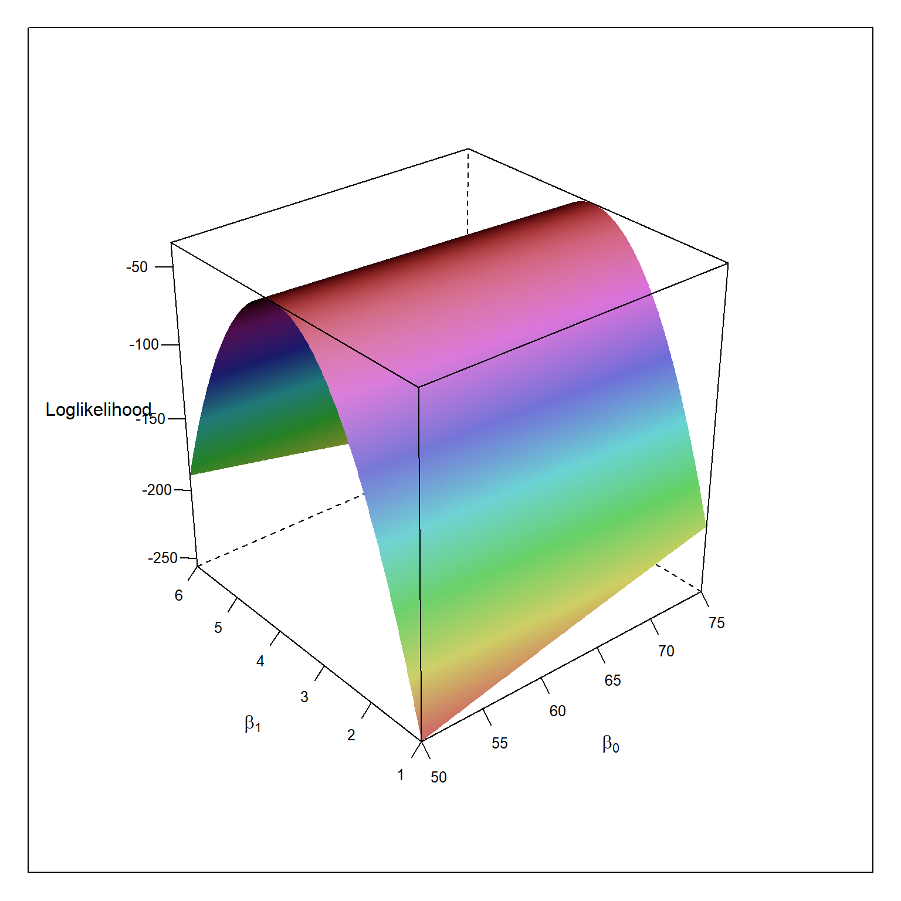

1 Linear Regression with One Predictor Variable
1.1 Relations between Variables
1.1.1 Example 1
require(here) fig1.2 <- read.csv(here('/data/fig1.2.csv/'),header=FALSE) require(ggplot2) ggplot(fig1.2,aes(x=V1,y=V2))+ geom_point(size=4,col='gray42')+ geom_smooth(method=lm,se=FALSE,lty=2,col='black')+ xlim(55,100)+ ylim(55,100)+ xlab('Midyear Evaluation')+ ylab('Year-End Evaluation')+ theme_bw()

1.3 Simple Linear Regression Model with Distributions of Error Terms Unspecified
1.3.1 Example (page 10)
\[Y_i = 9.5 + 2.1X_i + \epsilon_i\]
b0 = 9.5 b1 = 2.1 x = 0:70 mean = b0 + b1*x err.sd = 5 plot(x,mean,type="l", ylim=c(40,120), xlim=c(10,50), cex=1, pch=19, xlab="Number of Bids Prepared", ylab="Hours", xaxt='n') axis(side=1,at=c(0,25,45)) abline(b0,b1) dens = dnorm(seq(-3,3,.01),0,1) for(i in c(26,46)){ x. = x[i] - 5*dens y. = mean[i]+seq(-3,3,.01)*err.sd points(x.,y.,type="l",lty=2) abline(v=x[i],lty=2,col="gray") }

1.6 Estimation of Regression Function
1.6.1 Example (page 15)
Age <- c(20,55,30) Attempts <- c(5, 12, 10) fig1.9 <- data.frame(Age=Age,Attempts=Attempts) ggplot(data= fig1.9, aes(x=Age,y=Attempts))+ geom_point(size=4,color='gray42')+ xlim(c(10,60))+ ylim(c(0,15))+ theme_bw()+ geom_hline(yintercept = 9)+ geom_segment(x = fig1.9[1,1], y = fig1.9[1,2], xend = fig1.9[1,1], yend = 9)+ geom_segment(x = fig1.9[2,1], y = fig1.9[2,2], xend = fig1.9[2,1], yend = 9)+ geom_segment(x = fig1.9[3,1], y = fig1.9[3,2], xend = fig1.9[3,1], yend = 9)+ xlab('Age')+ ylab('Attempts')

# Sum of Squared Deviations sum((Attempts - 9)^2)
[1] 26mod <- lm(Attempts ~ 1 + Age,d=fig1.9) ggplot(data= fig1.9, aes(x=Age,y=Attempts))+ geom_point(size=4,color='gray42')+ geom_abline(intercept = coef(mod)[1],slope=coef(mod)[2])+ xlim(c(10,60))+ ylim(c(0,15))+ theme_bw()+ geom_segment(x = fig1.9[1,1], y = fig1.9[1,2], xend = fig1.9[1,1], yend = predict(mod, newdata = data.frame(Age=c(fig1.9[1,1]))))+ geom_segment(x = fig1.9[2,1], y = fig1.9[2,2], xend = fig1.9[2,1], yend = predict(mod, newdata = data.frame(Age=c(fig1.9[2,1]))))+ geom_segment(x = fig1.9[3,1], y = fig1.9[3,2], xend = fig1.9[3,1], yend = predict(mod, newdata = data.frame(Age=c(fig1.9[3,1]))))+ xlab('Age')+ ylab('Attempts')

# Model predictions predict(mod)
1 2 3
6.346 12.538 8.115 # Model Residuals resid(mod)
1 2 3
-1.3462 -0.5385 1.8846 [1] 5.654[1] 5.6541.6.2 Example (page 19)
table1.1 <- read.table(here('/data/CH01TA01.txt/'),header=FALSE) colnames(table1.1) <- c('lot.size','work.hours') table1.1
lot.size work.hours
1 80 399
2 30 121
3 50 221
4 90 376
5 70 361
6 60 224
7 120 546
8 80 352
9 100 353
10 50 157
11 40 160
12 70 252
13 90 389
14 20 113
15 110 435
16 100 420
17 30 212
18 50 268
19 90 377
20 110 421
21 30 273
22 90 468
23 40 244
24 80 342
25 70 323ggplot(table1.1,aes(x=lot.size,y=work.hours))+ geom_point(size=3,col='gray42')+ geom_smooth(method=lm,se=FALSE,lty=2,lwd=0.5,col='black')+ xlim(0,150)+ ylim(0,600)+ xlab('Lot Size')+ ylab('Hours')+ theme_bw()

Anova Table (Type III tests)
Response: work.hours
Sum Sq Df F value Pr(>F)
(Intercept) 13530 1 5.68 0.026 *
lot.size 252378 1 105.88 0.00000000044 ***
Residuals 54825 23
---
Signif. codes: 0 '***' 0.001 '**' 0.01 '*' 0.05 '.' 0.1 ' ' 1summary(mod)
Call:
lm(formula = work.hours ~ 1 + lot.size, data = table1.1)
Residuals:
Min 1Q Median 3Q Max
-83.88 -34.09 -5.98 38.83 103.53
Coefficients:
Estimate Std. Error t value Pr(>|t|)
(Intercept) 62.366 26.177 2.38 0.026 *
lot.size 3.570 0.347 10.29 0.00000000044 ***
---
Signif. codes: 0 '***' 0.001 '**' 0.01 '*' 0.05 '.' 0.1 ' ' 1
Residual standard error: 48.8 on 23 degrees of freedom
Multiple R-squared: 0.822, Adjusted R-squared: 0.814
F-statistic: 106 on 1 and 23 DF, p-value: 0.000000000445coef(mod)
(Intercept) lot.size
62.37 3.57 table1.1$x_xbar <- table1.1$lot.size - mean(table1.1$lot.size) table1.1$y_ybar <- table1.1$work.hours - mean(table1.1$work.hours) table1.1$x_xbar_y_ybar <- table1.1$x_xbar*table1.1$y_ybar table1.1$x_xbar.sq <- table1.1$x_xbar^2 table1.1$y_ybar.sq <- table1.1$y_ybar^2 table1.1
lot.size work.hours x_xbar y_ybar x_xbar_y_ybar x_xbar.sq y_ybar.sq
1 80 399 10 86.72 867.2 100 7520.4
2 30 121 -40 -191.28 7651.2 1600 36588.0
3 50 221 -20 -91.28 1825.6 400 8332.0
4 90 376 20 63.72 1274.4 400 4060.2
5 70 361 0 48.72 0.0 0 2373.6
6 60 224 -10 -88.28 882.8 100 7793.4
7 120 546 50 233.72 11686.0 2500 54625.0
8 80 352 10 39.72 397.2 100 1577.7
9 100 353 30 40.72 1221.6 900 1658.1
10 50 157 -20 -155.28 3105.6 400 24111.9
11 40 160 -30 -152.28 4568.4 900 23189.2
12 70 252 0 -60.28 0.0 0 3633.7
13 90 389 20 76.72 1534.4 400 5886.0
14 20 113 -50 -199.28 9964.0 2500 39712.5
15 110 435 40 122.72 4908.8 1600 15060.2
16 100 420 30 107.72 3231.6 900 11603.6
17 30 212 -40 -100.28 4011.2 1600 10056.1
18 50 268 -20 -44.28 885.6 400 1960.7
19 90 377 20 64.72 1294.4 400 4188.7
20 110 421 40 108.72 4348.8 1600 11820.0
21 30 273 -40 -39.28 1571.2 1600 1542.9
22 90 468 20 155.72 3114.4 400 24248.7
23 40 244 -30 -68.28 2048.4 900 4662.2
24 80 342 10 29.72 297.2 100 883.3
25 70 323 0 10.72 0.0 0 114.9[1] 3.57[1] 62.371.6.3 Example (page 21)
\[ \hat{Y} = 62.37 + 35702*X\]
predict(mod, newdata = data.frame(lot.size=65))
1
294.4 1.6.4 Table 1.2 (page 22)
table1.1 <- read.table(here('/data/CH01TA01.txt/'),header=FALSE) colnames(table1.1) <- c('lot.size','work.hours') mod <- lm(work.hours ~ 1 + lot.size,d=table1.1) table1.1$predicted <- predict(mod) table1.1$residuals <- resid(mod) table1.1$residuals.squared <- resid(mod)^2 table1.1
lot.size work.hours predicted residuals residuals.squared
1 80 399 348.0 51.0180 2602.8343
2 30 121 169.5 -48.4719 2349.5270
3 50 221 240.9 -19.8760 395.0538
4 90 376 383.7 -7.6840 59.0445
5 70 361 312.3 48.7200 2373.6384
6 60 224 276.6 -52.5780 2764.4440
7 120 546 490.8 55.2099 3048.1329
8 80 352 348.0 4.0180 16.1442
9 100 353 419.4 -66.3861 4407.1090
10 50 157 240.9 -83.8760 7035.1766
11 40 160 205.2 -45.1739 2040.6848
12 70 252 312.3 -60.2800 3633.6784
13 90 389 383.7 5.3160 28.2594
14 20 113 133.8 -20.7699 431.3887
15 110 435 455.1 -20.0881 403.5310
16 100 420 419.4 0.6139 0.3769
17 30 212 169.5 42.5281 1808.6377
18 50 268 240.9 27.1240 735.7136
19 90 377 383.7 -6.6840 44.6764
20 110 421 455.1 -34.0881 1161.9973
21 30 273 169.5 103.5281 10718.0635
22 90 468 383.7 84.3160 7109.1810
23 40 244 205.2 38.8261 1507.4630
24 80 342 348.0 -5.9820 35.7846
25 70 323 312.3 10.7200 114.91841.6.5 Alternative Model with Mean Centering (page 22)
table1.1 <- read.table(here('/data/CH01TA01.txt/'),header=FALSE) colnames(table1.1) <- c('lot.size','work.hours') table1.1$lot.size_centered <- table1.1$lot.size - mean(table1.1$lot.size) mod <- lm(work.hours ~ 1 + lot.size_centered,d=table1.1) Anova(mod,type=3)
Anova Table (Type III tests)
Response: work.hours
Sum Sq Df F value Pr(>F)
(Intercept) 2437970 1 1023 < 0.0000000000000002 ***
lot.size_centered 252378 1 106 0.00000000044 ***
Residuals 54825 23
---
Signif. codes: 0 '***' 0.001 '**' 0.01 '*' 0.05 '.' 0.1 ' ' 1summary(mod)
Call:
lm(formula = work.hours ~ 1 + lot.size_centered, data = table1.1)
Residuals:
Min 1Q Median 3Q Max
-83.88 -34.09 -5.98 38.83 103.53
Coefficients:
Estimate Std. Error t value Pr(>|t|)
(Intercept) 312.280 9.765 32.0 < 0.0000000000000002 ***
lot.size_centered 3.570 0.347 10.3 0.00000000044 ***
---
Signif. codes: 0 '***' 0.001 '**' 0.01 '*' 0.05 '.' 0.1 ' ' 1
Residual standard error: 48.8 on 23 degrees of freedom
Multiple R-squared: 0.822, Adjusted R-squared: 0.814
F-statistic: 106 on 1 and 23 DF, p-value: 0.000000000445coef(mod)
(Intercept) lot.size_centered
312.28 3.57 1.7 Estimation of Error Terms Variance
table1.1 <- read.table(here('/data/CH01TA01.txt/'),header=FALSE) colnames(table1.1) <- c('lot.size','work.hours') mod <- lm(work.hours ~ 1 + lot.size,d=table1.1) table1.1$predicted <- predict(mod) table1.1$residuals <- resid(mod) table1.1$residuals.squared <- resid(mod)^2 sse = sum(table1.1$residuals.squared) sse
[1] 54825[1] 2384sqrt(mse)
[1] 48.821.8 Normal Error Regression Model
1.8.1 Least Square Estimation
table1.1 <- read.table(here('/data/CH01TA01.txt/'),header=FALSE) colnames(table1.1) <- c('lot.size','work.hours') beta0 <- seq(50,75,.1) beta1 <- seq(1,6,.01) ols <- expand.grid(beta0,beta1) colnames(ols) <- c('beta0','beta1') ols$ssr <- NA for(i in 1:nrow(ols)){ p = ols[i,1] + ols[i,2]*table1.1$lot.size ols[i,3] = sum((table1.1$work.hours - p)^2) } require(lattice) wireframe(ssr ~ beta0 * beta1, data = ols, shade=TRUE, screen = list(z = 40, x = -60, y=0), scales = list(arrows=FALSE), xlab = expression(beta[0]), ylab = expression(beta[1]), zlab = "SSR") ols[which.min(ols$ssr),]
beta0 beta1 ssr
64632 62.4 3.57 54825
1.8.2 Maximum Likelihood Estimation
table1.1 <- read.table(here('/data/CH01TA01.txt/'),header=FALSE) colnames(table1.1) <- c('lot.size','work.hours') beta0 <- seq(50,75,.1) beta1 <- seq(1,6,.01) mle <- expand.grid(beta0,beta1) colnames(mle) <- c('beta0','beta1') mle$loglikelihood <- NA mse = 2383 # assumed to be known for(i in 1:nrow(mle)){ p = ols[i,1] + ols[i,2]*table1.1$lot.size mle[i,3] = sum(log(dnorm((table1.1$work.hours - p)/sqrt(mse)))) } wireframe(loglikelihood ~ beta0 * beta1, data = mle, shade=TRUE, screen = list(z = 40, x = -60, y=0), scales = list(arrows=FALSE), xlab = expression(beta[0]), ylab = expression(beta[1]), zlab = "Loglikelihood") mle[which.max(mle$loglikelihood),]
beta0 beta1 loglikelihood
64632 62.4 3.57 -34.48